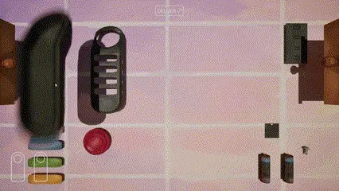
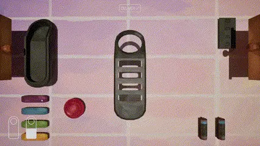

SAVE STATE
Gameplay
programmer
A little patience.
Everything in its place.
A hands-on puzzle about building a controller, one piece at a time.
Inside the project
From loose parts
to something
that works.
Save State turns controller assembly into a mechanical puzzle.
The player manipulates pieces, finds their place and builds a complete object. My responsibility was the assembly and progression systems: connecting physical placement to a result the game can evaluate.
- Role
- Gameplay programmer
- Engine
- Unreal Engine 5
- Language
- Blueprints
- Status
- Released
Freedom to assemble.
Precision underneath.
The satisfaction
of a precise fit.
I used Unreal Engine's sockets with AttachToComponent to connect each piece to defined points on the main controller model.
The player decides
when it's ready.
The system checks.
The challenge was to let the player assemble in their own way and deliver when they wanted, while still evaluating the result correctly.
- 01 / Interaction
Assemble
Place the pieces on the controller.
- 02 / Player action
Deliver
Submit the object for evaluation.
- 03 / Validation
Check attachments
Are all required pieces attached to their respective sockets?
All required attachments correctValid assembly
Missing or incorrect attachmentInvalid assembly
The important distinction: placing a piece and validating the complete assembly are separate responsibilities.
Pick up.
Piece together.
Try again.
Three views of the same tactile puzzle. The gameplay stays approachable; the attachment and validation logic gives it structure.

Simple to handle.
Clear to evaluate.
A tactile interaction needs a precise representation underneath it.
This project brought together socket-based assembly and whole-object validation. The central lesson was to separate how the player builds from how the game judges the result: expressive interaction, supported by clear attachment rules.

LUSÍADA-1
From the workbench to deep space.